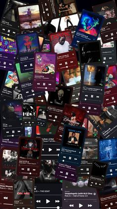
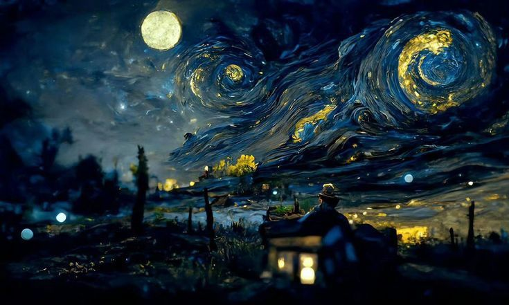
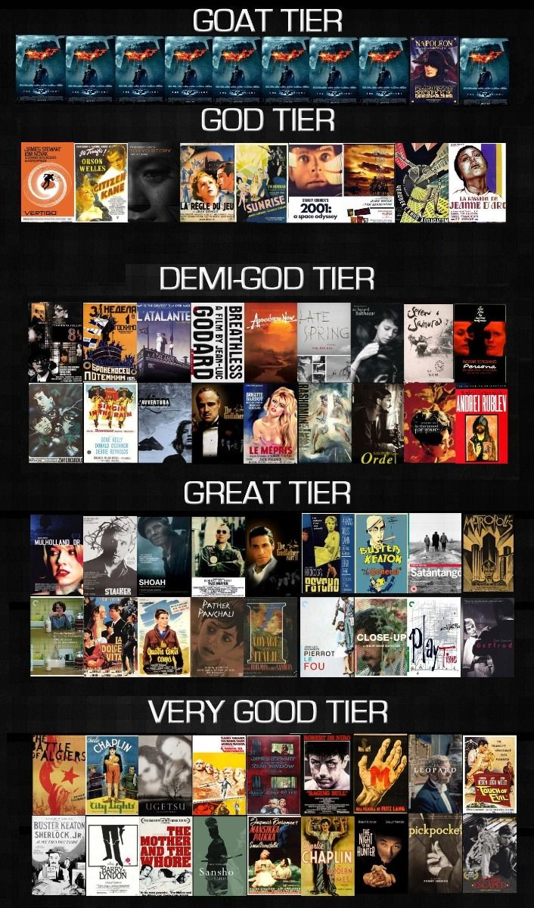
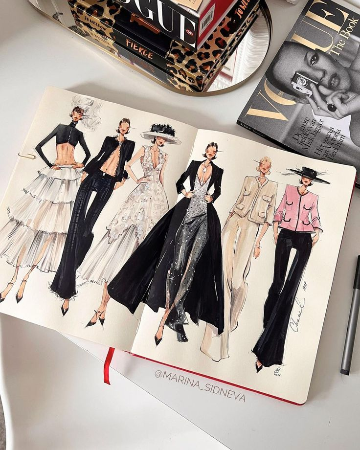

Music is my sanctuary, a universal language that transcends words and connects emotions. Whether I’m listening to soulful ballads or experimenting with instruments, music becomes a mirror of my mood and a tool for introspection. It energizes my spirit, calms my anxieties, and fuels my imagination for everything else I create.

Drawing, on the other hand, is my language of visuals. The blank canvas feels like a world of infinite possibilities, waiting for lines and colors to bring it to life. It’s a medium where I can translate abstract ideas into tangible forms. Every sketch is a story, every stroke an emotion, and the process itself teaches me patience, precision, and the beauty of imperfection..

Movies are another window into the endless tapestry of human experiences. As a cinephile, I am captivated by the storytelling, cinematography, and performances that breathe life into characters and plots. Movies inspire my creative pursuits by showing how art, narrative, and visual design converge to evoke emotion and thought..

Fashion designing combines my love for visual aesthetics and individuality. Designing outfits allows me to blend colors, textures, and patterns in ways that express personality and mood. Fashion isn’t just about clothes—it’s about identity and storytelling, woven together with threads of creativity and cultural influence..